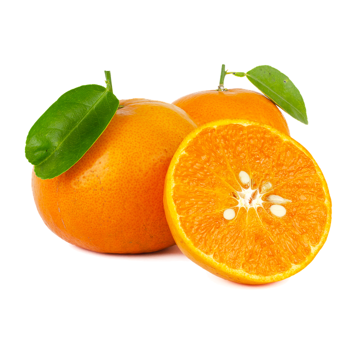

Tentangbuah.com

Jeruk

Jeruk atau limau adalah semua tumbuhan berbunga anggota marga Citrus dari suku Rutaceae (suku jeruk-jerukan). Anggotanya berbentuk pohon dengan buah yang berdaging dengan rasa masam yang segar, meskipun banyak di antara anggotanya yang memiliki rasa manis. Rasa masam berasal dari kandungan asam sitrat yang memang menjadi terkandung pada semua anggotanya.
Sebutan "jeruk" kadang-kadang juga disematkan pada beberapa anggota marga lain yang masih berkerabat dalam suku yang sama, seperti kingkit. Dalam bahasa sehari-hari, penyebutan "jeruk" atau "limau" (di Sumatra dan Malaysia) sering kali berarti "jeruk keprok" atau "jeruk manis". Di Jawa, "limau" (atau "limo") berarti "jeruk nipis".
Khasiat
- Mengurangi peradangan
- Melindungi dari infeksi
- Mencegah penyakit batu ginjal
- Mencegah serangan stroke
- Meningkatkan kekebalan tubuh
Daftar Harga
| Jenis Jeruk | Harga | |
|---|---|---|
| Per Kilo | Per Biji | |
| Jeruk Nipis | 50.000 | 5.000 |
| Jeruk Bali | 45.000 | 4.500 |
| Jeruk Sitrun | 40.000 | 4.000 |
| Jeruk Limau | 35.000 | 3.500 |